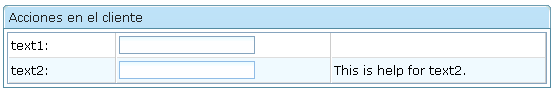
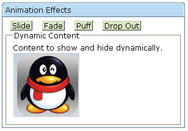
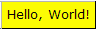
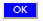

Sesión 9: Acciones en el cliente y CSS
Acciones en el cliente
ZK introduce algunas funcionalidades para poder implementar acciones JavaScript en el cliente. Algunas de ellas son:
- Acciones CSA para realizar animaciones (ZK 3.6.4)
- Integración con JQuery (ZK 5.0)
- Client computing (ZK 5.0)
Vamos a ver únicamente una de las características: las acciones CSA.
Algunas acciones como animaciones o carruseles de imágenes se deben realizar en el cliente utilizando JavaScript. Para hacer esto, ZK introduce el concepto de CSA (Client Side Actions, acciones en el lado del cliente). Con CSA es posible desarrollar código que escucha los eventos de JavaScript así como llamar a código JavaScript en el cliente.
Un script CSA es similar a un gestor de eventos, con la excepción de que la acción está escrita en JavaScript y se ejecuta en el cliente. Es posible definir acciones para cualquier evento JavaScript, tales como onfocus, onblur, onmouseover y onmouseout.
Las acciones en el cliente están restringidas a efectos visuales que permiten mostrar o esconder componentes.
La sintaxis es:
action="[onfocus|onblur|onmouseover|onmouseout|onclick|onshow|onhide...]: ''javascript'';"
Las acciones en el cliente se combinan con los componentes ZK, de forma que es posible modificar ciertos atributos (visible o no visible, por ejemplo) en el propio cliente. Esto es útil en casos especiales en los que se quiere dar más agilidad a ciertas acciones en la aplicación.
Para identificar el componente sobre el que realizamos la acción, debemos utilizar una sintaxis especial similar a las expresiones EL, que nos permite referenciar los componentes en el cliente: "#{}
<button action="onmouseover: action.show(#{id1})"/>
Un ejemplo:

<grid>
<columns>
<column width="20%"/>
<column width="40%"/>
<column width="40%"/>
</columns>
<rows>
<row>
<label value="text1: " />
<textbox
action="onfocus: action.show(#{help1}); onblur: action.hide(#{help1})" />
<label id="help1" visible="false" value="This is help for text1." />
</row>
<row>
<label value="text2: " />
<textbox
action="onfocus: action.show(#{help2}); onblur: action.hide(#{help2})" />
<label id="help2" visible="false" value="This is help for text2." />
</row>
</rows>
</grid>
El objeto action permite llamar a los métodos show y hide para mostrar o esconder cualquier componente de la interfaz:
| action.show(cmp) | Hace visible el componente que se pasa como parámetro con una expresión #{}. |
| action.hide(cmp) | Hace invisible el componente que se pasa como parámetro con una expresión #{}. |
Otro objeto que es posible utilizar para definir efectos es el objeto anima (basado en scriptaculous). Permite realizar efectos de animación sobre componentes div. Posibles apariciones:
- anima.appear(): hace visible el componente que incrementando su opacidad
- anima.slideDown(): hace visible el componente moviéndolo hacia abajo
Desapariciones:
- anima.slideUp()
- anima.fade()
- anima.appear()
- anima.puff()
- anima.dropOut()
Ejemplo:

<window title="Animation Effects" width="300px" border="normal">
<style>
.ctl{
border: 1px outset #777;
background: #ddeecc;
margin: 2px;
margin-right: 10px;
padding-left: 2px;
padding-right: 2px; }
</style>
<label value="Slide" sclass="ctl"
action="onmouseover:anima.slideDown(#{t});
onmouseout:anima.slideUp(#{t})" />
<label value="Fade" sclass="ctl"
action="onmouseover:anima.appear(#{t});
onmouseout:anima.fade(#{t})" />
<label value="Puff" sclass="ctl"
action="onmouseover:anima.appear(#{t});
onmouseout:anima.puff(#{t})" />
<label value="Drop Out" sclass="ctl"
action="onmouseover:
anima.appear(#{t});onmouseout:anima.dropOut(#{t})" />
<div id="t" visible="false">
<div>
<groupbox>
<caption label="Dynamic Content" />
Content to show and hide dynamically.
<image src="imagenes/pinguino.png" />
</groupbox>
</div>
</div>
</window>
Modificando el aspecto de los componentes con CSS
El aspecto de todos los componentes es modificable mediante directivas CSS. Es posible hacer dos tipos de cambios en los componentes:
- Cambios en el aspecto de componentes individuales: utilizando los atributos sclass y style de los componentes para especificar las propiedades CSS.
- Cambios en el aspecto de todos los componentes de una misma clase: modificando las clases CSS que ZK ha definido para las propiedades de los componentes.
Vamos a ver ejemplos de ambas técnicas.
Comenzamos examinando el CSS que genera ZK mediante Firebug. Definimos un componente en una página ZUL, por ejemplo un textbox, y examinamos la página resultante con Firebug para comprobar la definición de CSS. Debe ser consistente con la definición de la documentación de ZK de textbox. La guía de diseño en la que se definen las clases CSS aplicadas a todos los componentes se encuentra en esta página.
Las clases CSS que se definen para el textbox y sus valores por defecto son:
.z-textbox {
background: #FFF url(${c:encodeURL('~./zul/img/grid/text-bg.gif')}) repeat-x 0 0;
border: 1px solid #7F9DB9;
font-family: ${fontFamilyC};
font-size: ${fontSizeM};
font-weight: normal;
}
.z-textbox-readonly, .z-textbox-text-disd {
background: #ECEAE4;
}
Probamos a modificar en Firebug algunas de las propiedades y comprobar el aspecto resultante.
En las guías de estilo podemos encontrar todas las clases CSS aplicables a todos los components. Por ejemplo:
Modificando el CSS de componentes individuales
La primera forma de hacerlo es utilizando el atributo style para configurar los elementos CSS del componente:
<label value="Hello, World!"
style="border: 1px outset;background-color:yellow;padding:5px"/>

La otra forma de hacer esto mismo (más general) es definiendo un estilo CSS con style y aplicándolo con sclass en la etiqueta:
<window title="CSS Class">
<style>
.blue {
color: white; background-color: blue;
}
</style>
<button label="OK" sclass="blue"/>
</window>

Cambiando el aspecto de todos los componentes de un determinado tipo
Basta con redefinir las clases ZK que están definidas para el componente (consultar documentación):
Un ejemplo con un botón:
<zk>
<style>
.z-button {
color: red;
}
.z-button-over {
color: blue;
}
.z-button-clk {
color: black;
}</style>
<button label="click" onClick="" />
</zk>
Y un ejemplo con un toolbar:
<zk>
<style>
.z-toolbar {
border-width: 5px 5px 5px 5px;
border-color: red;
}</style>
<toolbar>
<toolbarbutton label="button1"/>
<toolbarbutton label="button2"/>
</toolbar>
</zk>
Cambiando las propiedes globales
Hemos visto que muchos componentes se basan en propiedades comunes como fontSizeM o fontFamily. Los valores por defecto de estas variables son los siguientes:
- org.zkoss.zul.theme.fontSizeM: 12px. El tamaño de fuente por defecto.
- org.zkoss.zul.theme.fontSizeS: 11px. Se usa en los componentes que requieren fuentes pequeñas, como toolbar
- org.zkoss.zul.theme.fontSizeXS: 10px. Fuente extremadamente pequeña; se usa raramente.
- org.zkoss.zul.theme.fontSizeMS: 11px. El tamaño de fuente usado en los menús
- org.zkoss.zul.theme.fontFamilyT: Por defecto: Verdana, Tahoma, Arial, Helvetica, sans-serif. El tipo de fuente utilizado en los títulos de menús.
- org.zkoss.zul.theme.fontFamilyC: Por defecto: Verdana, Tahoma, Arial, serif. El tipo de fuente utilizado en los contenidos.
Se pueden modificar los valores por defecto definiendo otros valores en el fichero de configuración WEB-INF/zk.xml:
<library-property>
<name>org.zkoss.zul.theme.fontSizeM</name>
<value>12px</value>
</library-property>
<library-property>
<name>org.zkoss.zul.theme.fontSizeS</name>
<value>10px</value>
</library-property>
<library-property>
<name>org.zkoss.zul.theme.fontSizeXS</name>
<value>9px</value>
</library-property>